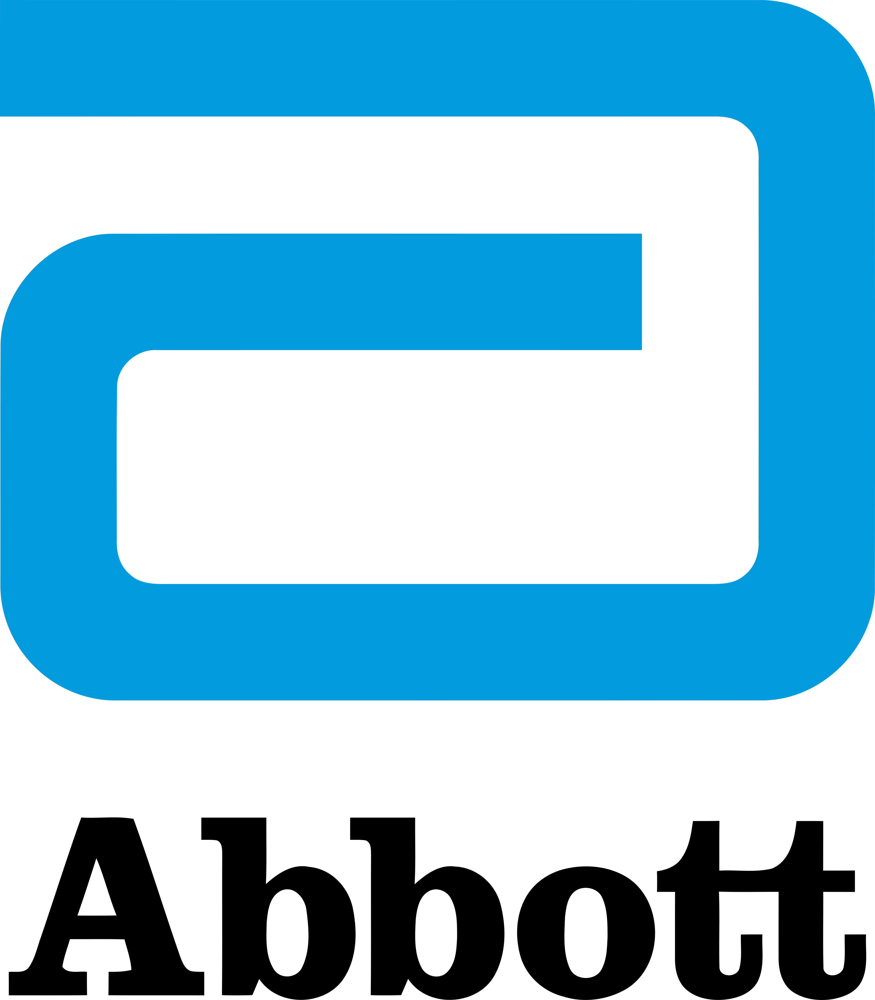

Meta Platforms
Production Engineer
- Owned new data center region turn-ups for 90+ Meta Recommendation Systems (MRS) services across 5 regions, coordinating 10+ cross-functional oncall teams and reducing turn-up completion time from 7 to 2 days.
- Built Claude skills and CLI automations to formalize MRS infrastructure turn-up runbook execution, reducing engineering hours from 2 days to a few hours.
- Designed and deployed real-time performance variability detectors and reservation capacity monitoring pipelines — savings of over $10M in operational expense.

Discover Financial Services
Software Engineer · Business Technology Intern
- Transitioned legacy cloud services to modern infrastructure, increasing service reliability by over 75% for customer credit services.
- Led migration of 3 production services to OpenShift using Java and AWS technologies.
- Modernized monitoring and alerting by transitioning from AppDynamics to Datadog; provisioned third-party tools via Jenkins CI/CD.

Abbott Laboratories
Software Solutions Intern
- Built a Python-based database management system using optimized SQL queries, enhancing procurement data retrieval by 50%.
- Enhanced document management for 300+ users via SharePoint and Power BI integrations.

Quantum & Nano-Photonics Lab, UIUC
Research Assistant
- Built multithreaded Python interface for nanoparticle scanning, improving data acquisition rates by 20%.
- Developed integration modules for E-712 Digital Piezo Controllers and single-photon detectors, transitioning from LabVIEW and optimizing data pipelines by 40%.
Academic Background
Education

Georgia Institute of Technology
M.S. Computer Science — Systems Track
Aug 2025 – Present
GPA 4.0
Coursework:
Grad Introduction to Operating Systems · Robotics AI Techniques · Intro to Information Security
University of Illinois at Urbana-Champaign
B.S. Computer Engineering · Minor in Statistics
Aug 2021 – Dec 2024
GPA 3.7
Coursework:
Intro to AI · Data Structures · Operating Systems · Database Systems · Algorithms · Computer Systems